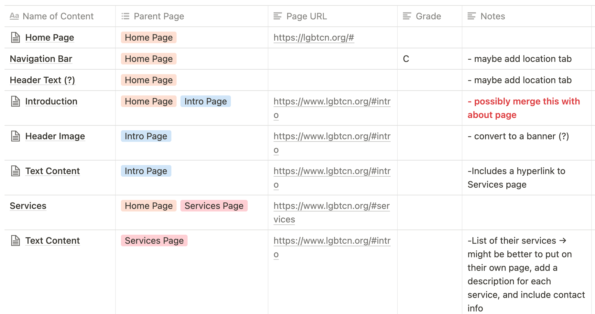
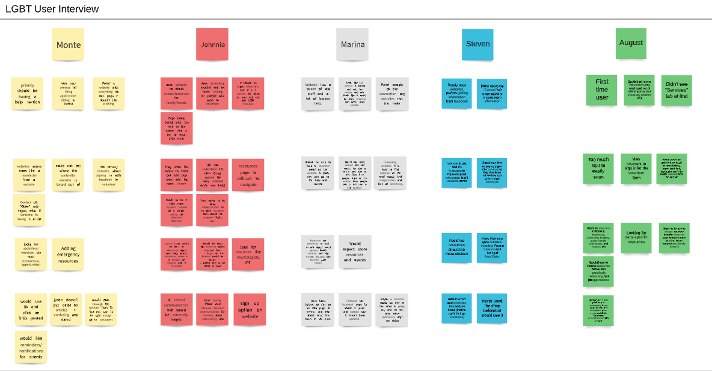

LGBT
Community Network
Team: Product Managers: Stefanie Mendoza & Ankita Bantey
Designers: Reese R. Aivy P., Jonathan L., & Vylam V.
Project Summary
The LGBT Community Network is a nonprofit that works to support lesbian, gay, bisexual, transgender communities all across California State. The original LGBT Community website was hard to navigate, resulting in low online engagement. This project required a complete website redesign - with an intuitive, highly customizable website-building tool - for LGBT Community. The design team added new features that are approved by the client - such as a leadership page, events page, and organization highlights. The new website includes additional information from the previous website and encourages website visitors to get involved with the LGBT Community Network. The redesigned website is also easy for the executive board to edit and maintain.
Check out the updated website here
Background
The LGBT Community Network aims to enhance the well-being of the lesbian, gay, bisexual, transgender communities by providing activities, programs and services that create and support community; empower community members; provide essential resources; and embrace, promote and support cultural diversity.

Challenges
The project challenge was to redesign the current LGBT Community Network website to address the following pain points:
1. Vague organization objectives
2. Difficult to navigate the website
3. Unclear/difficult website functionality and user flow
4. Difficulty in understanding website content and purpose


Fig. 1. Original Home/Umbrella Site for the LGBTCN.
Research Phase
Part 1
Our first phase of our redesign began with creating a CMS (Web Content Management) Comparison chart to provide our client with the best management system that would suit their needs.

Fig. 2. Narrowed down version of our CMS Comparison Chart
Due to Wordpress's capabilities to run a multisite network, integrate with third party tools easily (SEO tools), and offer a directory of plugins, the team and the client began the transfer from Joomla to Wordpress.
Part 2
To identify gaps within the website, our team conducted a Content Inventory and Audit to assess the current content of the website and review what information needed to be remove or updated.

Fig. 3. Example of our Content Inventory
User Interviews
The team conduct user interviews and developed a survey for volunteers and first time users on their experience with the network and the website.

Fig. 4. Synthesized user interview board

Fig. 5. Preview of Survey Results
Key takeaways from our user research:
1. Website is not engaging and feels more like a newsletter
2. Website information needs to be more consistently updated
3. Resources should be better organized and there should be an emphasis on local resources
Proto Persona
Based on our research and interviews, the team developed proto personas to articulate the target audience and their needs.

Fig. 6. Example of Proto Persona (By Aivy)

Fig. 7. Example of Proto Persona (By Jonathan)
Sketches and Prototype
The team developed multiple sketches for each page within the main site, each focusing on reorganizing the layout and its contents.

Fig. 8. Sketches for the Volunteer Page
Fig. 9. Sketches for the Resources Directory
After receiving feedback from the client and refining our sketches, the team proceeded to prototyping each web page.

Fig. 10. Different versions of prototyped home page
Design Components
Implementation
Next Steps
InsuLearn is the first chapter of an interactive visual book on diabetes, created by the community, for the community.
How else can we visualize to make diabetes management easier to understand? Moving forward, our users could see themselves using these tools to understand the multitude of factors in diabetes, such as the effects of exercise, complex meals, stress, pregnancy and menstrual cycles.
There are infinite ways design could help in further visualizing and understanding diabetes. Everybody has different visions of what a great life looks like, and implementing tools that bring users’ goals to the forefront is essential.
Check out the tool here
 Contact ->
Contact ->